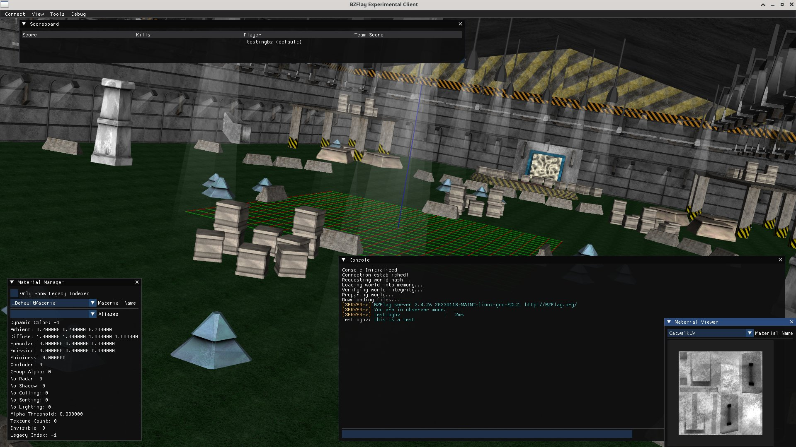
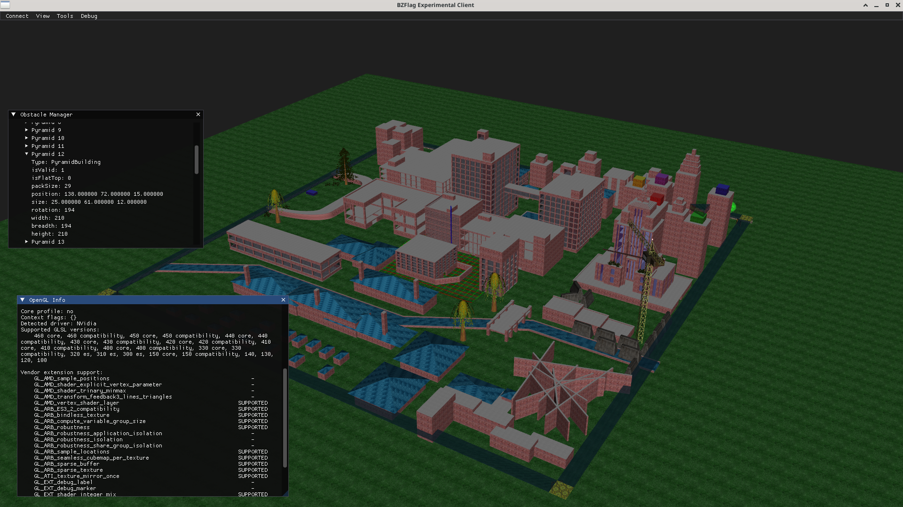
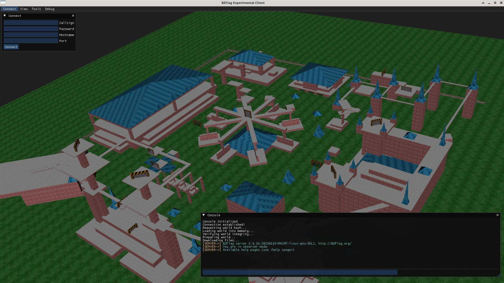

BZ-Next Running on Librem 5 phone
Supporting embedded OpenGL
blast007 was able to build and run the BZ-Next client on a Librem 5, a linux phone with GLES2 support.
[Read More]
BZ-Next is an experimental fork of BZFlag that redoes the rendering engine from the ground-up, using modern OpenGL, and the Magnum graphics library.
See the about the project page for more information!
 Map: Rats Nest by Winny
 Map: Urban Jungle by Army of One
 Map: Fairground by Ian
BZ-Next is still in heavy development, so releases are expected to be buggy. Windows releases will be made available for download on the Releases page. Linux users, please build from source. Instructions are found on the Building page.
The current goal is to aim for support for OpenGL 2.1, OpenGL ES 2.0, and WebGL 2. Some features might only be supported on more capable platforms. Currently, the development build may not function on all platforms. Help us test it out!
You can follow development progress at BZ-Next on GitHub. Contributions, issue reports, etc are welcome!